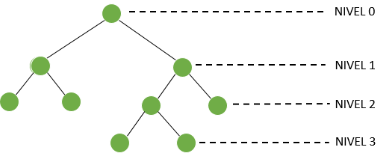
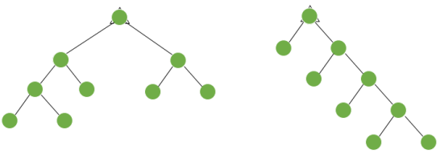

En un árbol binario T. se dice que un vértice Vi está en el nivel li. Si la distancia de la raíz Vr es
igual a li. Es decir, d (Vr, Vi) ) = li

En muchas aplicaciones de los arboles binarios es importante determinar el máximo o el
mínimo números de niveles que puada tener un árbol binario T con n vértice. En la siguiente figura se
muestran dos árboles binarios con 9 vértices.

Con mínimo número de niveles fig. 5 (a) (en este caso 3) y máximo número de niveles fig. 5
(b) (en este case 4).
El máximo nivel, lmax de un árbol binario T se llama la ALTURA del árbol. Así, en el árbol de la
figure 3 (a) y 3 (b) se tiene que lmax = 3 y lmax = 4 respectivamente.
Para un arbola binario T con n vértices se tiene que la MÁXIMA ALTURA
𝑀𝑎𝑥𝐿𝑚𝑎𝑥 = (𝑛 − 1)/2
También se tiene que en un árbol binario T con n vértices. LA MÍNIMA ALTURA 𝑚𝑖𝑛𝐿𝑚𝑎𝑥 =
(log 2 (n + 1 ) – 1 ) (donde [x] significa el menor entero mayor o igual a x.). Recordando que
[X] = k si y solo si k - 1 < x ≤ k.